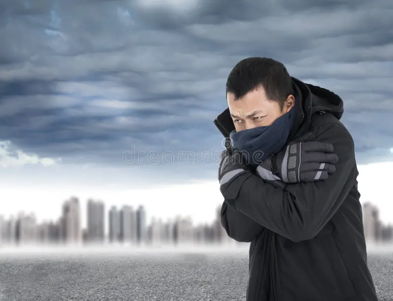
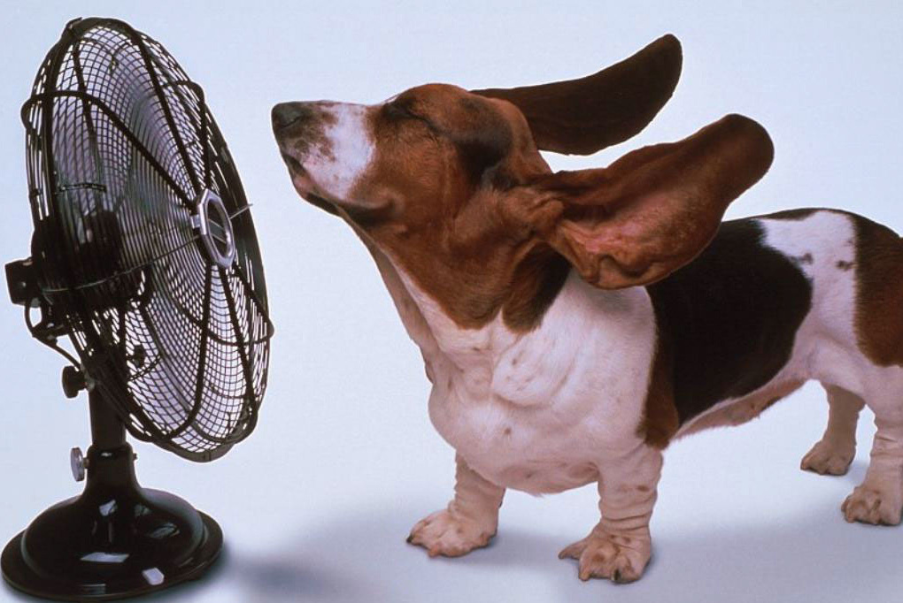

This button will bring you back to the home page.
Extrme climate website 🌪️This link will bring you to the original website that I made for my sience class in the end of my school time.
This topic will talk about how extrme weather happens, what they are, climate change affection, and how they work.
This topic will talk about all the spheres in earth, for example, Atmospher, Bioshere, Geosphere, and Hydrosphere.
This topic will talk about how all the different heating transerfring methoeds work, and how it is be used in real life.
This topic will talk about how the water cycle works and all the levels of the prosses. It will also talk about how climate change affects it.
This topic will talk about how and why wind happens in Earth and what it does so.
This topic will talk about the causes of weather and how Climate change effects it.
This topic will talk about the causes of fronts, why do they happen and what are they used for.
This topic will talk about all the seans and there differeaces between them.
This topic will talk about the differance between the weather and the climate and what it uses to predict them.